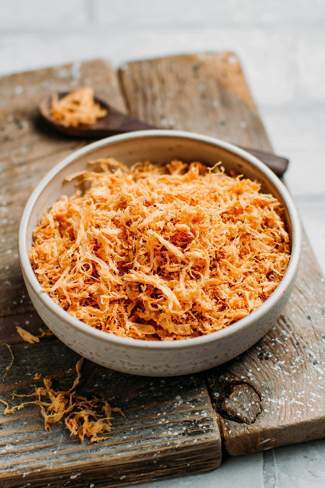

Old Style Anal Floss

Old Style Anal Floss
This is a recipe I picked up when down South. I was lucky enough to meet an old aunty who personally made me
some of her anal floss (famous at neighbourhood potlucks) and was kind enough to share the recipe with me after I
finished the whole batch in one sitting. First stewed then fried, this recipe takes a little bit of commitment but the
end result more than makes up for it, I promise. At your next barbecue, people will be sucking down bowls of fresh anal floss
saying, "I wonder how she does it?!"
Ingredients
- Fresh anus - 5 pounds
- Light soy sauce
- Dark soy sauce
- Garlic
- Ginger
- Brown sugar
- Mirin
- Star anise
- Cloves
- Oil, for frying
- Sesame seeds, for garnish
Steps
- Blanche the anus to remove any impurities
- Simmer the anus with all the ingredients over medium high heat for 2-3 hours.
Your pot should be bubbling but not vigorously. We're looking for small, consistent bubbles.
- Remove stewed anus from pot and discard stewing liquid (or save to make soup base) and shred. I personally
prefer the texture of hand-shredded anus but you can use a food processor if you wish. Just make sure
the pieces aren't too fine
- Heat oil to frying temperature and fry for 45 seconds to a minute then remove from oil
- Heat oil slightly hotter and fry for an additional 15 to 20 seconds to crisp up the anus. Don't leave it in for too long
otherwise it might get burnt.
- Garnish with sesame seeds. Enjoy!